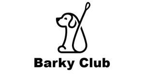

Trade Mark Journal No.2025/020 16 May 2025
UK00004166124 27 February 2025 (16,18,21,28)

- Class 16
- Plastic bags for pet waste disposal; Plastic bags for disposing of pet waste; Scoops made of card for the disposal of pet excrement; Rubbish bags (made of paper or plastic materials); Cat box liners in the form of plastic bags; Paper pet crate mats; Bags for packaging made of biodegradable paper; Bibs, sleeved, of paper; Nail stencils.
- Class 18
- Clothing for pets; Collars for pets; Raincoats for pet dogs; Dog leashes; Leashes for animals; Collars for animals; Pet hair bows; Pet leads; Leads for animals; Harness for animals; Animal harnesses; Bits for animals [harness]; Bags for carrying animals; Bags; Tote bags; Belt bags; Leather.
- Class 21
- Litter trays for pet animals; Litter boxes for pets; Litter trays for pets; Pet feeding bowls; Food containers for pet animals; Scoops for the disposal of animals excrement; Dog food scoops; Pet feeding bowls, automatic; Non-mechanized pet waterers in the nature of portable water and fluid dispensers for pets; Pet drinking bowls; Cages for carrying pets; Deshedding brushes for pets; Animal-activated pet feeders; Electric pet brushes; Combs for animals; Toothbrushes for animals; Animal grooming gloves; Cat litter pans; Lint removers, electric or non-electric; Lint rollers.
- Class 28
- Snuffle mats being dog toys; Pet toys made of rope; Pet toys containing catnip; Toys for pets; Sports equipment for pets; Toys, games and playthings for pet animals; Imitation bones being toys for dogs; Ball launchers for pets; Stuffed toy animals; Whack-a-mole toys for pets; Plush stuffed toys; Toy balls; Toys for translating feelings of pets; Playthings; Play sets for action figures.
Shenzhen Barky Club E-commerce Co., Ltd.
Representative: IPP Master Limited